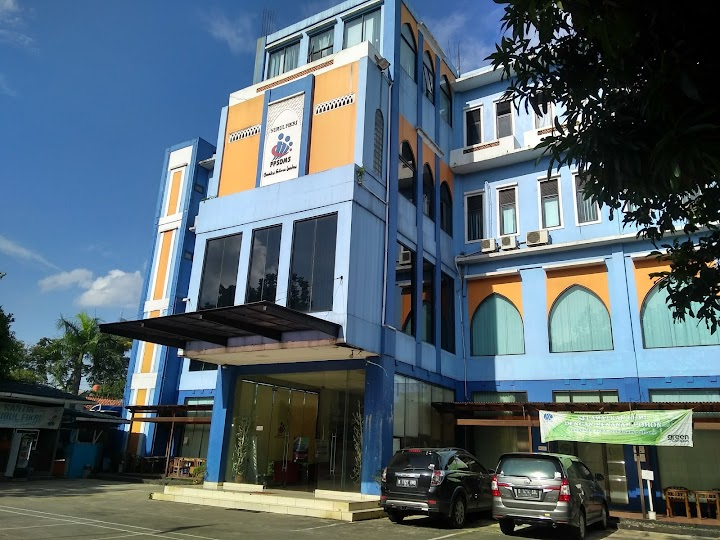

Profile Kampus STT-NF


Melihat repotnya petugas parkir yang mengatur kendaraan karena terlalu padat, akhirnya kami berinisiatif membuat aplikasi sistem parkir sebagai sarana yang memudahkan pekerjaan sehingga petugas parkir tidak perlu menghabiskan tenaganya untuk mengatur. Kami dengan sepenuh hati akan memberikan layanan jasa parkir untuk sivitas STT-NF. Dengan adanya aplikasi ini diharapkan dapat memberikan manfaat dari sistem parkir.
Silahkan daftar kendaraan anda dengan klik tombol dibawah ini!
Sekolah Tinggi Teknologi Terpadu Nurul Fikri telah mengadakan Kuliah Umum dengan tema “Teknologi Digital (Peluang, Tantangan, dan Ikhtiar Membersamainya) pada hari Sabtu, 25 Desember 2021 bertempat di Auditorium Kampus B STT-NF secara luring (offline & online) untuk online dapat diakses melalui aplikasi Zoom dan Live Streaming di Youtube STT Terpadu Nurul Fikri. Kuliah Umum ini mendatangkan narasumber yang profesional di bidangnya yaitu Dr. Ir. Bambang Priantono, M.T. (PROFESSIONAL BUSINESS COACH STARTUP ENTHUSIAST). Beliau pernah menjabat sebagai Komisioner Badan Regulasi & Telekomunikasi Indonesia (BRTI), General Manajer di PT Indosat Tbk., Direktur Operasional di PT Aplikanusa Lintasarta, Direktur di PT Indosat M2, Komisaris di PT Artajasa Pembayaran Elektronis. Peserta kegiatan ini terdiri dari Ketua STT-NF, Dr. Lukman Rosyidi, M.T., M.M., Dosen serta mahasiswa-mahasiswi STT-NF.
PKM merupakan salah satu wujud implementasi Tridharma Perguruan Tinggi yang diluncurkan oleh Direktorat Jenderal Pendidikan Tinggi di bawah pengelolaan Direktorat Pembelajaran dan Kemahasiswaan (Belmawa) merupakan salah satu upaya untuk menumbuhkan, mewadahi, dan mewujudkan ide kreatif serta inovatif mahasiswa. STT NF melakukan Sosialisasi PKM kepada seluruh mahasiswa STT-NF yang diselenggarakan pada Rabu, 05 Januari 2022. Pukul 15.30-17.00 WIB melalui Zoom Meeting. Dengan diadakan Sosialisasi dan pembukaan PKM, mahasiswa dapat ikut berpartisipasi dalam acara PKM 2022. Persyaratan: Mahasiswa Aktif STT Terpadu NF 1 team terdiri dari minimal 3 orang dan maksimal 5 orang, diperbolehkan dari jurusan dan angkatan yang berbeda. Dengan diadakannya PKM semoga dapat mewujudkan ide kreatif serta inovatif mahasiswa. Pendaftaran PKM telah dibuka dengan batas pendaftaran 06 – 13 Januari 2022.